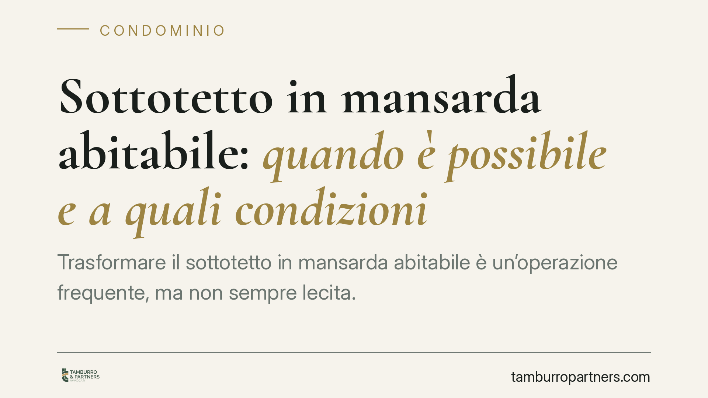

Sottotetto in mansarda abitabile: quando è possibile e a quali condizioni
Trasformare il sottotetto in mansarda abitabile è un'operazione frequente, ma non sempre lecita. La possibilità dipende dalla titolarità dello spazio, dal regolamento condominiale e dalle norme urbanistiche locali. Prima di avviare i lavori occorre verificare a chi appartiene il sottotetto e se l'intervento incide su parti comuni dell'edificio.

Il primo nodo: di chi è il sottotetto
La domanda decisiva non è tecnica ma proprietaria: il sottotetto è un bene privato o rientra tra le parti comuni dell'edificio?
L'art. 1117 del codice civile elenca le parti comuni condominiali. Il sottotetto non è espressamente citato, ma la giurisprudenza lo assimila a parte comune quando svolge una funzione al servizio dell'intero edificio, ad esempio come camera d'aria o isolamento termico del piano sottostante.
La Cassazione ha chiarito che la natura del sottotetto va accertata caso per caso. Se lo spazio ha altezza e caratteristiche tali da poter essere destinato a uso autonomo, e se non svolge una funzione condominiale, tende a considerarsi pertinenza dell'appartamento all'ultimo piano. In caso contrario resta bene comune, con tutte le conseguenze sul piano decisionale.
Cosa dice il titolo di provenienza
Accanto al criterio funzionale conta il titolo di acquisto. L'atto notarile, il regolamento condominiale di natura contrattuale e le tabelle millesimali possono attribuire espressamente il sottotetto a un singolo proprietario oppure alla collettività dei condomini.
Se il regolamento è contrattuale (accettato da tutti i condomini in sede di acquisto), le sue previsioni sulla titolarità e sull'uso prevalgono. Un regolamento meramente assembleare, invece, non può modificare i diritti di proprietà.
Il vincolo urbanistico
Anche quando il sottotetto è di proprietà esclusiva, la trasformazione in mansarda abitabile non è automatica. Occorre rispettare i requisiti igienico-sanitari e di abitabilità previsti dalla normativa statale e regionale: altezza media minima, rapporti aeroilluminanti, superfici delle finestre.
Molte Regioni hanno adottato leggi sul recupero dei sottotetti a fini abitativi che ammettono altezze ridotte rispetto agli standard ordinari. La disciplina cambia da territorio a territorio: è indispensabile verificare la legge regionale applicabile e il regolamento edilizio comunale.
Sul piano dei titoli edilizi, l'intervento richiede in genere una comunicazione o un permesso a seconda dell'entità delle opere e del mutamento di destinazione d'uso, con eventuale pagamento del contributo di costruzione.
Implicazioni pratiche per il proprietario
Per chi possiede l'appartamento all'ultimo piano, la posta in gioco è concreta. Se il sottotetto è pertinenza esclusiva, l'intervento è possibile nel rispetto delle norme urbanistiche, senza necessità di autorizzazione assembleare, salvo che i lavori non coinvolgano il tetto o altre parti comuni.
Se invece il sottotetto è bene comune, l'uso esclusivo da parte di un solo condomino richiede il consenso degli altri o una delibera qualificata. Procedere senza titolo espone al rischio di azioni di ripristino e a controversie con il condominio.
Attenzione anche all'aumento di volumetria e di superficie utile: incide sulle tabelle millesimali e può comportare la revisione dei riparti di spesa.
Cosa fare in concreto
- Verifica la titolarità: recupera l'atto di acquisto, il regolamento condominiale e le tabelle millesimali per accertare a chi appartiene il sottotetto.
- Consulta un tecnico: fai valutare da un architetto o geometra le altezze reali, i rapporti aeroilluminanti e la fattibilità urbanistica alla luce della legge regionale.
- Controlla la disciplina locale: verifica al Comune se esiste una legge regionale sul recupero dei sottotetti e quali titoli edilizi servono.
- Coinvolgi il condominio se necessario: se le opere toccano il tetto o parti comuni, richiedi la delibera assembleare prima di iniziare.
- Formalizza tutto per iscritto: prima di sostenere spese, consigliamo di far esaminare la documentazione a un legale per prevenire contestazioni successive.
La trasformazione del sottotetto è un'operazione che intreccia diritto di proprietà, disciplina condominiale e norme urbanistiche. Un accertamento preliminare accurato riduce sensibilmente il rischio di contenzioso.
---
*Contributo informativo a cura di Tamburro & Partners - Avv. Giuseppe Tamburro. Non costituisce parere legale.*
Ogni condominio ha una storia a sé.
Se gestisci un'amministrazione e vuoi un confronto su una specifica questione condominiale, scrivi allo studio. Ti rispondiamo entro un giorno lavorativo.